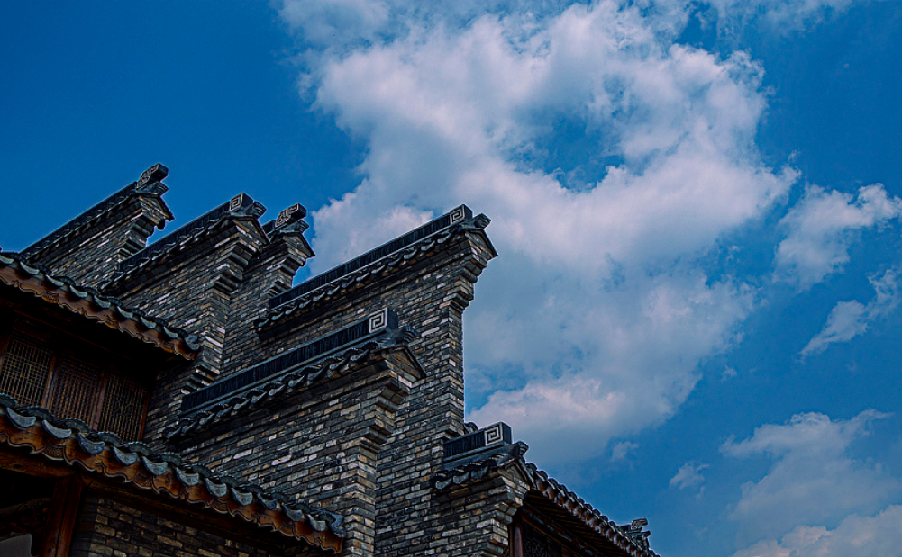
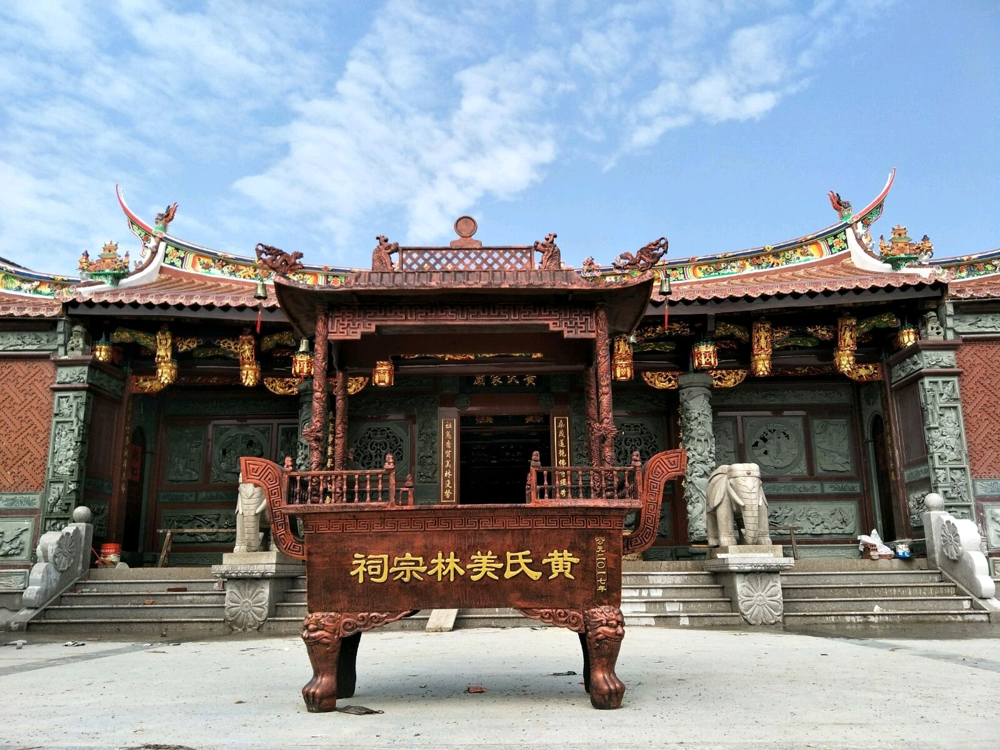
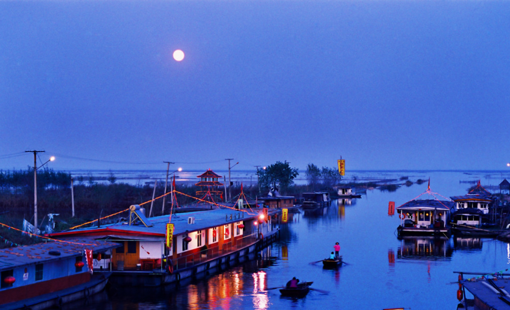
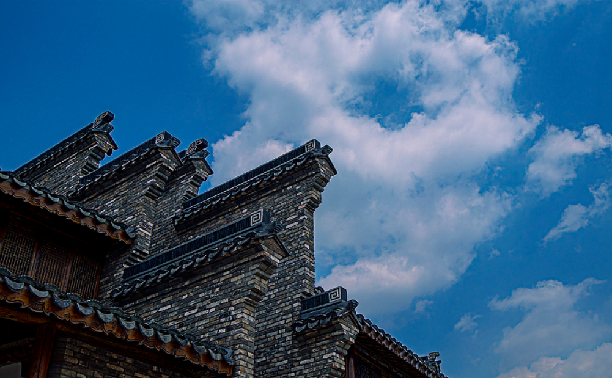
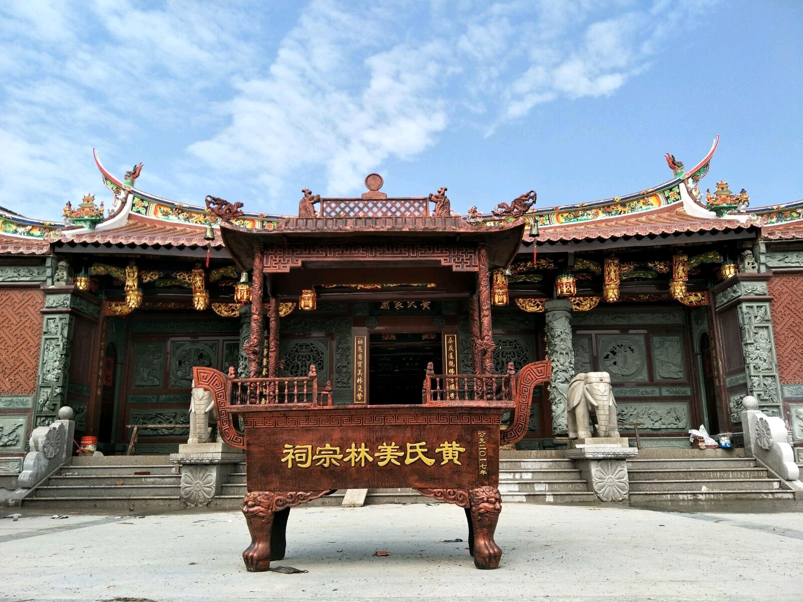
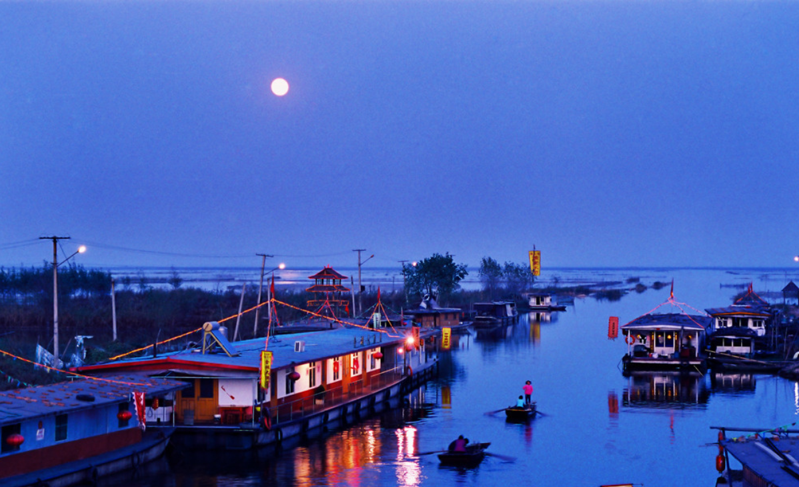
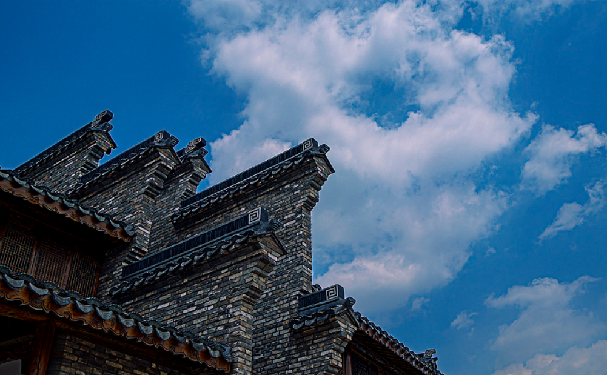
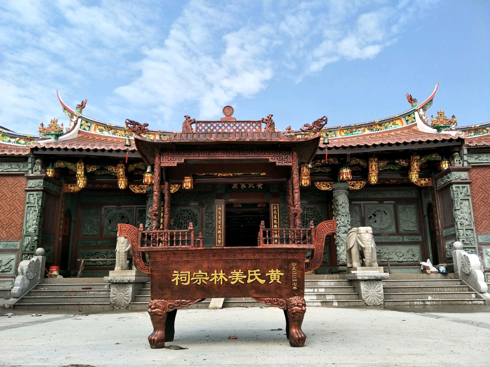
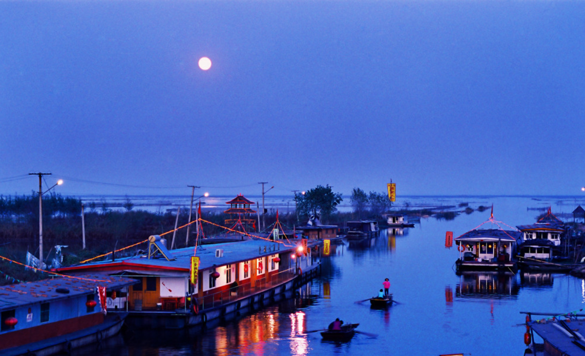
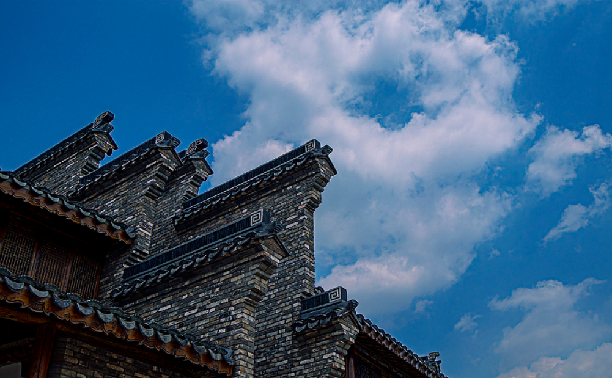
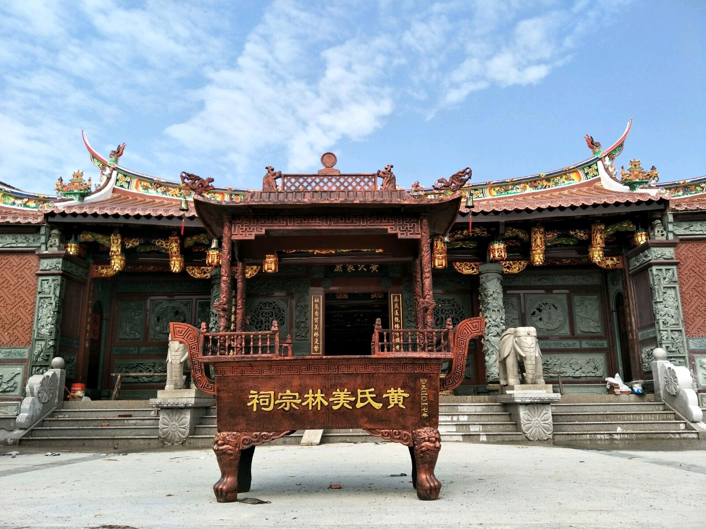
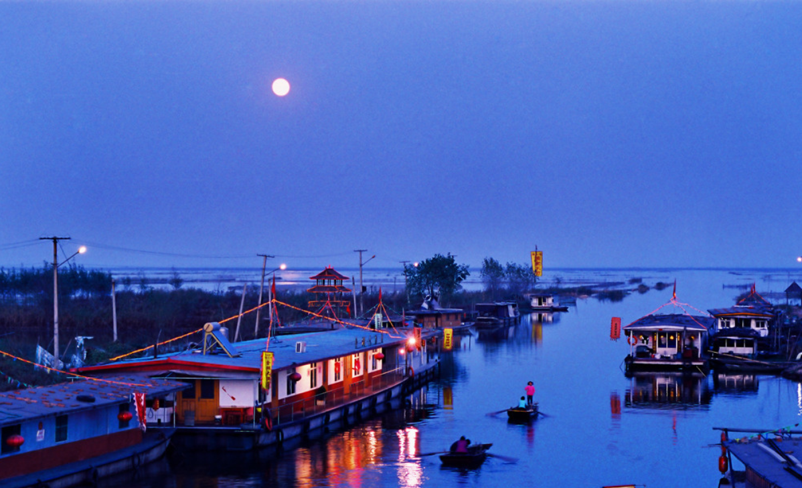
湖上升明月
蚌埠湖上升明月（古民居博览园）位于安徽省蚌埠市龙子湖南部，是一个以修复重建450栋不同地区传统民居建筑为主的大型旅游项目。民族特色鲜明，旅游文化功能突出，市场运营潜力巨大。项目建设目标是创建国家5A级风景旅游区。建成后，对丰富皖北的旅游资源，完善全省的旅游战略格局，具有重要意义。 [1] 这是一个抢救保护的散落古民居、并将其集中重建的大型文化旅游景区，也是中国第一座“露天博物馆”。
“湖上升明月”古民居博览园是蚌埠市国家级“大禹文化产业园”的核心板块;被安徽省委宣传部评为省“文化产业示范园区(基地)”;被安徽省旅游局评为“十佳旅游项目”;被安徽省台办列入“第一批对台交流基地”;并被列入文化部和旅游部“中国文化产业重点项目名录”和“全国优选旅游项目名录”。园区成为民间对外友好交流和传播中华优秀传统文化的重要窗口
简介蚌埠湖上升明月（古民居博览园）位于蚌埠市龙子湖西南岸，规划范围5000亩，其中建设用地1314亩，规划建筑面积近30万平方米。计划总投资68亿元。2012年11月正式开工兴建，计划于2021年建成。项目建成后，将是国内规模最大、建筑类型最多、文化内涵丰富、服务设施完善的古民居博览园。结合龙子湖风景区规划的实施，以文化旅游产业为主导，以抢救性收藏的450栋古民居为主体，精心规划，整体开发，打造成古民居建筑文化展示、文化创意企业集聚、旅游观光、休闲度假为一体的生态型、国际化的文化旅游区。
景点介绍风情老街
位于主湖心岛、占地150亩、由近200栋各式徽派古民居组成、内圈有两圈环岛商铺，经过两年多的建设，轮廓初现，建成后，街巷错落，小桥流水人家，遍布酒楼饭馆、茶坊咖吧、客栈民宿、画廊书店、戏院影城……环岛水系与园区观光河道相连，架设形态各异的石桥24座，形成新“二十四桥”的美丽景观。
古戏台剧坊
位于主湖心岛的古戏台剧坊建成投入试运行。该建筑建于清光绪十四(1888年)，是不多见的室内古戏台。2016年5月6日，为纪念明代大戏曲家汤显祖逝世四百周年，上海昆剧团和安徽泗州戏剧院同台汇演《牡丹亭》，传为佳话。市文广新局(旅游局)举行授牌仪式，将这里作为国家级非物质文化遗产花鼓灯和泗州戏的传习基地。
尚书故里
坐落于园区龙尾的祁门倪氏大祠堂全面建成。该祠堂原建筑面积800余平方米，建于安徽祁门有“尚书故里”之称的渚口古村，主屋部分构件系明代建筑原物。前进石柱环立，檐廊高畅，天井开阔。修复后，在毁损的后进配建古戏台，两侧加建边厅、客房、庭院等，面积扩至3000平方米，功能齐全，气势恢宏。
红厝圣迹。
由颜、蔡两族7栋老宅和一栋500年的颜氏宗祠组成。一栋栋“皇宫起”红砖大厝，抢救自闽南泉州某古村落。泉州是古代东方大港，有海上“丝绸之路”起点之称。该村第一大姓颜氏，系孔子大弟子颜回后人。500年的颜氏宗祠，记载着古代圣贤的事迹，见证了“一带一路”的遥远起点。
两岸一“家”
一栋距今200多年、建筑面积2000平方米的浙江宁波侯氏大宅门，诉说着两岸同胞生离死别、悲欢离合的沉重往事，和见证了两岸一“家”、割不断的亲情，呼唤祖国统一、民族复兴能够早日梦圆。
深巷酒香
阮社是浙江绍兴三大酒乡之一，以盛产上品黄酒而出名。池湾河畔的酒弄堂，为酿酒世家章氏世居之地，也是善元泰酒坊和章东明酒坊的发祥地。所产黄酒，芳香浓郁，入口甜润，行销省内外。章宅古貌依稀可辨，两侧三板、二板石萧墙，具有典型的浙东水乡民居特色。因旧城改造需要，酒弄堂被全部拆除，所幸老宅木构件、石板及章家后人保存的部分酿酒器具，被抢救收藏。将根据测绘图纸及相关资料，在园中复建酒弄堂。“深巷酒香”将成为展示中国酒文化的一个独特文化景观。
临川寻梦
江西临川古民居，清水高墙，建筑风格独特。更因是“东方莎士比亚”、明代剧作家汤显祖的故乡而名闻遐迩。景点根据相关历史资料，用一栋临川明代古宅重建“玉茗堂”，同时配建四梦台、金柅阁以及花园、池塘等景观设施。形成园林式的“牡丹亭”景观，并可以进行《牡丹亭》实景演出。
督军府邸
倪嗣冲是中国近代史上特别是北洋政府时期的一个重要历史人物，曾“驻蚌治皖”十年。该祠建于1921年春，后因年久失修，损坏严重，在城市改造中被拆除。倪公祠迄今已逾90余年，具有典型的时代特征和地域特征，有一定的历史文化价值。和蚌埠市博物馆合作，筹建蚌埠历史民俗展示馆，打造具有皖北特色的古民居建筑文化景点。
双塔映湖
位于园区北侧山头的七层龙脊宝塔已木结构封顶。该塔高45米，建筑面积340平方米，二层是宽大的观景平台。游人登临，倚城望月，园区美景尽收眼底。远处位于人工湖中央的湖心阁，木结构也已封顶。湖山相依，塔阁遥望，双塔映湖，成为古民居博览园具有标志性的建筑。
东方神木
园中将建有专馆，安放神州“乌木之王”。乌木是三千年至上万年之间，在特定的水流和地质条件下形成，有“东方神木”之称。该乌木长十多米，需数人合抱，如此体积巨大，十分罕见，弥足珍贵，堪称镇园之宝
意义这450栋古建筑只是投资方负责人马国湘先生二十多年来从全国17个省市收购的1000多栋古民居中的一部分，在皖南、江西、福建、浙江等地，他的“抢救性收购”使很多具有百年历史的古民居免遭摧毁。
由于项目功能突出，观赏性强，2013年接待参观考察193批3000多人次。省领导王学军、王明方、曹征海、臧世凯、全国政协等先后来现场视察，也经常有市民自发前来现场“探班”。
项目坚持总体规划、专业管理，聘请知名专家学者加强对项目的指导和决策咨询，聘用专业古建筑设计和修复队伍，使用传统工艺，对古民居进行修复并施工，使古民居既有的美学价值得到传承和充分发扬。
为使项目可持续经营，具有社会和经济双重效益，在古民居得到保护的同时，赋予其新的使用功能。建设古民居客栈、古民居风情商业街、古戏台剧场等等，满足游客“吃、住、行、游、购、娱”的需要。并将创设古民居大师工作室、文化讲坛、举办古民居艺术展会，吸引文化创意和旅游服务企业入驻，实现古民居的开发建设同休闲度假、旅游服务、文化创意等产业的高度融合。
| 开放时间： | 全天开放 |
| 景点级别： | 国家AAAA级 |
| 适宜旅游季节： | 春夏秋较佳 |